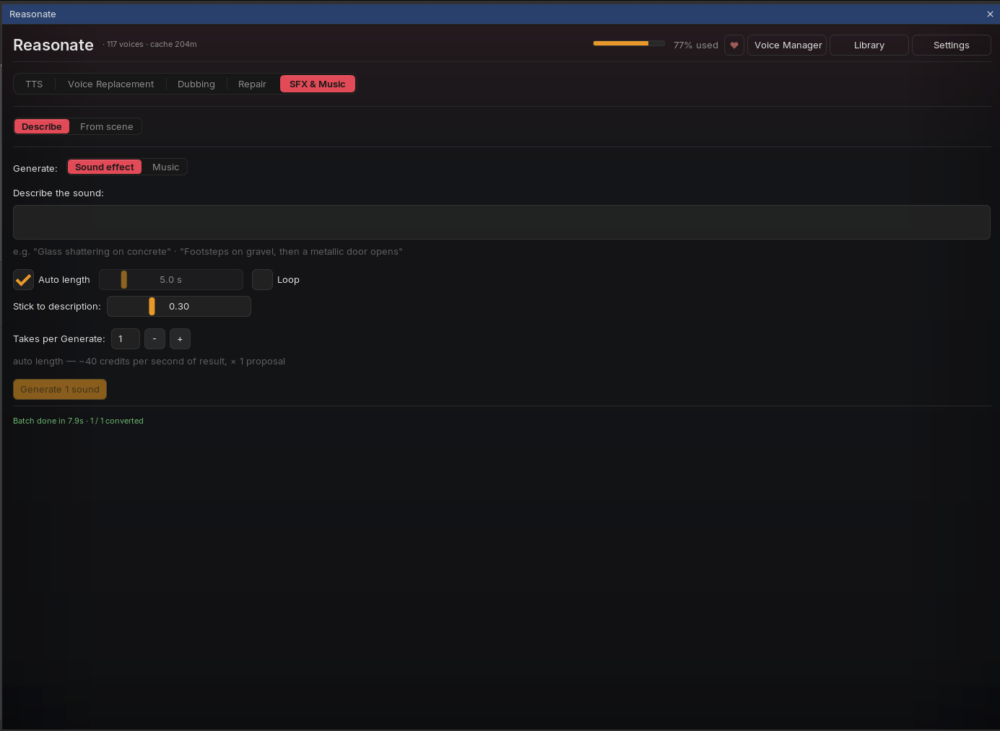
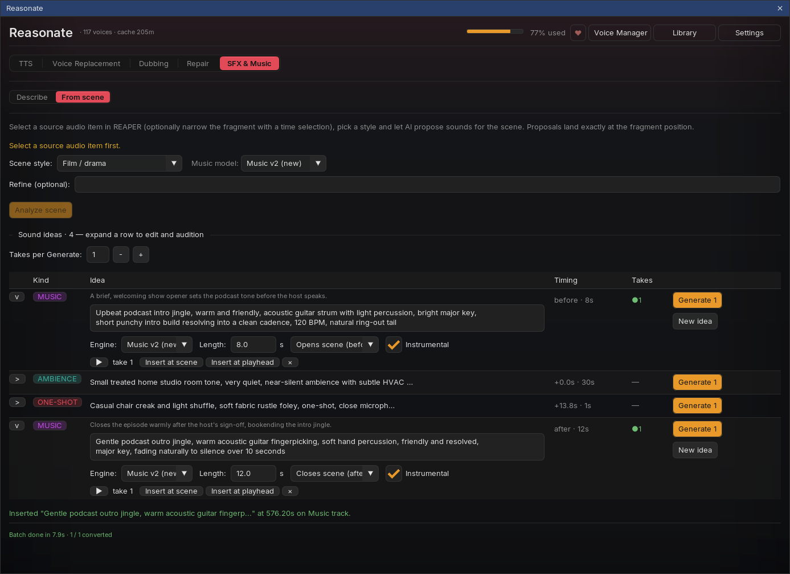
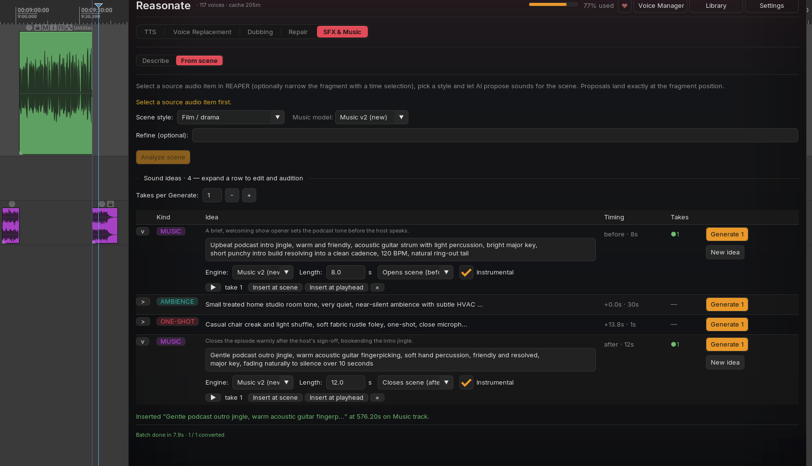

Sub-mode 1Describe

Sound effects
- Prompt - plain language: "Glass shattering on concrete", "Footsteps on gravel, then a metallic door opens".
- Length - Auto lets the model decide; or set 0.5 to 30 seconds.
- Loop - renders a seamless loop (great for room tone and ambience beds; loopable musical material like drum loops works here too).
- Stick to description - how literally the model should follow your prompt versus improvise.
- Takes per Generate - render several proposals per click and keep the best.
Music
Switch Generate: to Music for full music beds: describe the style and mood, set the length (quick chips from 10 seconds to 5 minutes), and choose Instrumental only if you do not want vocals. Two engines are available - Music v2 (default, newest) and v1.
Sound effects cost about 40 credits per second of result, per take. Music draws from your plan's music allowance (minutes based); the preview number in the panel is an estimate - check your ElevenLabs dashboard for exact usage.
Generated music does not loop by itself - the music engine has no loop option. For short musical loops, use the sound-effects engine with Loop on.
Every result appears in the results list with ▶ preview, Insert (placed at the playhead on an auto-created "SFX" or "Music" track) and ×. Results are grouped per Generate click, and the whole panel - including your generated takes - is saved with the project.
Sub-mode 2From scene
This is sound design in reverse: instead of you describing sounds, Reasonate reads the scene and proposes them.
-
Point it at audio
Select a source item in REAPER (narrow it with a time selection if you only want a fragment). Pick a scene style - Film / drama, Podcast, Audio drama, or one of your own saved styles - and optionally refine ("only diegetic sounds, no music").
-
Analyze scene
Reasonate transcribes the fragment (shared cache with Repair - already-transcribed material is free), sends the scene to your LLM, and returns a list of sound ideas: openers, ambience beds, one-shot foley for specific events, outros. Each idea knows when it belongs: intro before the scene, anchored at the exact second of its event, or after the scene ends.
-
Edit, generate, audition
Every idea is fully editable: the prompt text, the kind (one-shot / ambience / music), length, placement, engine (sound effects vs music), instrumental toggle. Generate renders takes inline in the row; ▶ auditions them. Not feeling an idea? New idea rephrases it into a different take on the same moment.
-
Insert at scene
One click places the take exactly where the idea points - openers end right where the scene starts, anchored effects hit their word, ambience beds can loop-fill the entire scene. Inserts respect whatever placement values the row currently shows, so you can retime before committing.


The number of proposals follows the scene and the style - an audio drama brief asks for foley on every action plus layered ambience, a podcast brief keeps it to an opener, a bed and an outro. Your saved styles can encode your own production recipe.